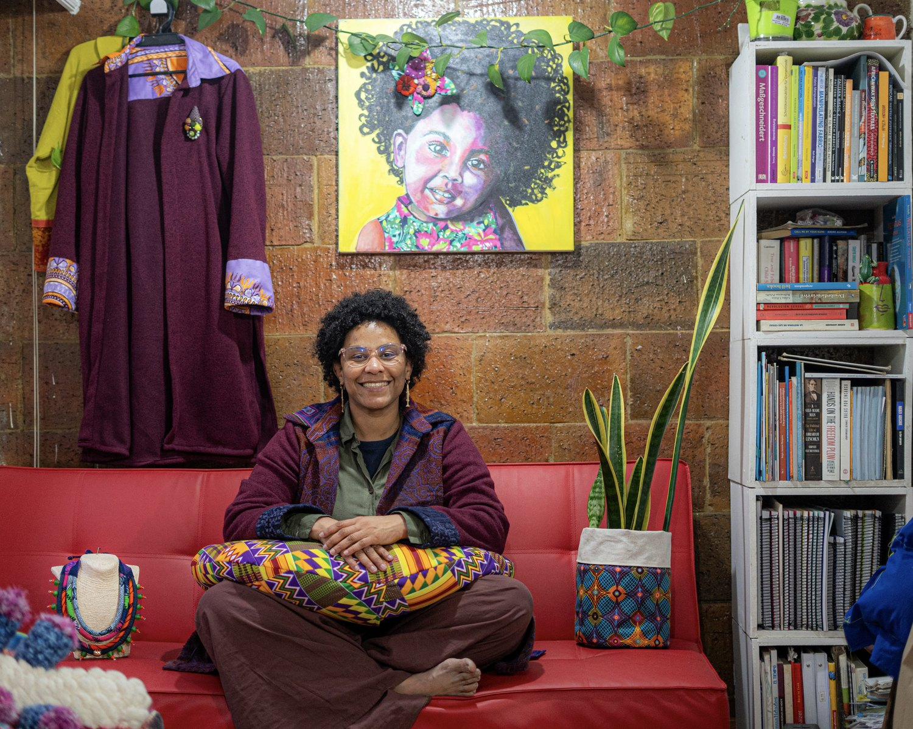

Gretha Huffington May: una vida hecha de retazos con memoria africana

La primera vez que vi a Gretha Huffington May llevaba una blusa roja, una falda con rayas azules y unos aretes largos dorados con forma de pez. Tenía unas gafas con una montura clara, con un sutil tono rosado. Es morena, de cabello negro rizado y corto. Sus ojos son expresivos y cálidos, los cuales se achinan de forma natural cuando sonríe.
Es un lunes lluvioso y tengo la oportunidad de conocer el taller de su marca Raizal Design, ubicado en Usaquén, al norte de Bogotá. Estamos frente a una puerta de color marrón, Gretha abre y al entrar me encuentro un espacio lleno de colores, recortes de telas y diversos tipos de prendas y accesorios. Es el refugio de una diseñadora de modas, artista y patronista. Un lugar que te hace pensar en África y en las comunidades afrodescendientes del mundo.
Debe ser porque su historia con el diseño empezó en Ghana. Llegó a ese país en 2011, cuando tenía 30 años, porque su entonces esposo de origen alemán había sido trasladado por razones de trabajo. Lo que más le impactó fueron las telas, especialmente el Wax Print, también llamado Ankara, un tejido de algodón con estampados coloridos, caracterizado por diseños geométricos, florales o simbólicos. Cada diseño funciona como un lenguaje visual que comunica emociones, estatus, relaciones y posturas sociales. Aunque hoy está profundamente asociado a África, su origen está en la técnica batik de Java, en Indonesia, industrializada por europeos en el siglo XIX e introducida después en África occidental, donde fue adoptada por las comunidades locales.

“Todos los domingos me sentaba en el balcón de mi apartamento a ver a las señoras que iban a la iglesia que quedaba enfrente. Para mí era como un desfile, se veían elegantes y los vestidos eran muy llamativos”, recuerda Gretha. Tanta era su fascinación, que empezó a ir al Mercado de Makola, el más grande y concurrido de Accra, la capital de Ghana. Entre sus calles bulliciosas y caóticas, compraba telas Wax Print solo para coleccionarlas.
Con el deseo de hacerle la ropa a sus hijas, Luna y Linzi, decidió formarse con Evelyn, una diseñadora de Accra, quien le enseñó confección y diseño. Las prendas que realizaba para Luna, su hija mayor, para ir al jardín llamaban tanto la atención que otras madres comenzaron a pedirle ropa para sus hijos. “Entonces, así fue como arrancó mi marca Raizal Design”, dice.
Su propuesta estética era diferente a la moda predominante de Ghana. “Ellos usan mucha tela, mucho bolero y mucha decoración. Yo prefiero los cortes rectos, planos, sencillos y minimalistas”. Esta forma de diseñar tuvo una gran acogida entre la comunidad internacional residente en el país, especialmente entre europeos que admiraban los estampados Wax Print, pero buscaban prendas menos recargadas.
Al principio, Gretha tampoco se atrevía a vestirse con esos textiles tan llamativos, prefería usar ropa al estilo H & M. Comenzó incorporándolos poco a poco, primero haciéndose una falda Wax Print con una blusa básica de un solo color. Hasta que un día decidió salir completamente vestida con tela africana. Fue a comprar una mazorca asada a un vendedor que solía instalarse cerca de su casa. Mientras la atendía, él la observó por unos segundos y de repente le dijo:
-Welcome home, my lost sister (Bienvenida a casa, mi hermana perdida).
“Se me erizó la piel”, recuerda.
Años después, sigue pensando en esa frase. Para ella, esas palabras hablan de una historia compartida marcada por la esclavización y la trata transatlántica, una memoria profundamente presente en África.
Nació en Providencia, una pequeña isla montañosa ubicada en el mar Caribe, a más de 700 kilómetros de la Colombia continental. Como otros territorios del Gran Caribe, hombres y mujeres provenientes de África Occidental fueron llevados al Archipiélago de San Andrés, Providencia y Santa Catalina para trabajar en las plantaciones establecidas por los colonizadores ingleses. Con ellos llegaron conocimientos, tradiciones y formas de hablar que, al encontrarse con el inglés de los colonos, contribuyeron a la formación de la cultura raizal y de la lengua Kriol.
En Ghana, Gretha empezó a encontrar rastros de esa identidad. Una mañana, mientras cosía en el taller de Evelyn, escuchó a personas nigerianas y ghanesas conversando. Aunque no entendía completamente lo que decían, algunas palabras le resultaban familiares. Preguntó qué idioma hablaban y Evelyn le explicó que era pidgin inglés nigeriano. Tiempo después, durante una conversación con una mujer del pueblo Ga, Gretha le habló sobre el kriol que se habla en Providencia. La mujer le explicó que muchas de las palabras de esa lengua tenían raíces africanas, especialmente de la región de Ashanti. Entre las palabras que despertaron su interés estaba "Anancy", un personaje muy conocido en la tradición oral del archipiélago. Descubrió que la palabra provenía de "ananse", que significa araña en twi, una de las lenguas más habladas del país.
“Ahí hubo un cambio en mi mentalidad”, dice. Para la diseñadora, haber crecido en Providencia significó vivir con una gran influencia aglosajona, mientras que las raíces africanas ocupaban un segundo plano. Pero esto cambió durante su estancia en Ghana. Dejó de centrar su orgullo únicamente en sus apellidos, Huffington May, ambos de origen inglés, para comenzar a valorar las raíces africanas presentes en su cultura, familia e identidad.
“Empecé a entender que somos una mezcla. Somos un patchwork”.
Mientras habla, se levanta del cojín donde estaba sentada y se acerca a un maniquí ubicado en una esquina del taller que lleva puesta una blusa negra. Con una mano señala un cuadrado que está ubicado en el centro de la prenda, compuesto por retazos de telas de distintos colores, tamaños y estampados. Algunos tienen motivos geométricos, mientras que otros tienen líneas irregulares. Está mostrando un ejemplo de patchwork.

“Esa técnica se utilizaba como mapas para personas esclavizadas que escapaban del sur hacia Canadá. Por ejemplo, el azul indicaba un río o lago por cruzar; el verde, un bosque por atravesar. Así funcionaba como una guía”, cuenta Gretha.
Aunque existe en varias partes del mundo, en el archipiélago, el patchwork surgió como una respuesta a las limitaciones propias del territorio insular. “Nosotros no producimos telas ni tenemos telares, todo viene de afuera”, explica. Recuerda que, en tiempos de su bisabuela, las telas y prendas llegaban principalmente desde Panamá. Cuando un pantalón se rompía o una camisa se desgastaba se le ponía un patch (parche) y cuando sobraran retazos de tela, estos se guardaban y más tarde se cosían entre sí para hacer manteles, fundas de almohada, cojines y para tapar la licuadora o algún objeto de la cocina. Desde su taller, Gretha ha desarrollado esta técnica desde lo conceptual. Ha creado más de cien collares, broches y accesorios que en muchos casos son piezas únicas, cada una construida con retazos de diferentes telas dentro de una misma idea.

Para ella, la moda es una forma de expresión y resistencia. “Si estoy en un entorno donde soy minoría y aun así me visto como me identifico, eso ya es una decisión consciente de mantener mi identidad”, dice.
En más de diez años de trabajo, ha confeccionado cerca de 900 prendas, con las que ha vestido a artistas como Goyo y otros integrantes de ChocQuibTown; reinas y representantes culturales del archipiélago en escenarios nacionales e internacionales; diplomáticos y funcionarios públicos, entre ellos embajadores de Colombia en distintos países; figuras afrodescendientes con proyección internacional, como Epsy Campbell, exvicepresidente de la República de Costa Rica; y presentadores y mujeres influyentes de la comunidad raizal. Su hija Luna se siente orgullosa de todo lo que ha construido con su marca Raizal Design. “Es de las pocas personas que conozco que encontró algo que ama hacer y logró convertirlo en su trabajo”, afirma.

Es hija de Imelda May García y Ambrosio Huffington Archbold y la segunda de tres hermanos. En Providencia, se crío en Bahía Suroeste, en una casa que quedaba frente al mar. Estuvo rodeada de turismo, ya que al lado de su casa se encontraba el restaurante de su mamá y muy cerca un hotel de su familia paterna. Su hermana Grace, recuerda que de pequeña Gretha tenía mucho carácter y su actitud a veces era desafiante. “Era de las que respondían: ‘¿Y qué?’ o ‘¿Y entonces qué?’. Algunas de mis primas incluso contaban que les daba miedo porque era muy brava”, dice entre risas.
Las dos hermanas crecieron entre el movimiento constante del restaurante familiar. Trabajaban como meseras, aunque Gretha, por ser mayor, asumía más responsabilidades. Atendía la barra, servía a los clientes y ayudaba a contar el dinero. “Eso nos enseñó sobre la responsabilidad y a valorar el trabajo”, afirma Grace.
A los 13 años Gretha viajó a Medellín para terminar el bachillerato en un internado adventista, una decisión impulsada por su madre, quien quería que sus hijos se adaptaran gradualmente a la vida en la ciudad. Después de terminar, se regresó a Providencia porque aún no tenía claro qué quería estudiar. Durante ese tiempo volvió a trabajar en el restaurante familiar, donde conoció a una pareja de alemanes que pasaban su luna de miel en la isla. Tras entablar una buena relación con Gretha, la invitaron a visitar Alemania.
Sin pensarlo mucho, con 16 años hizo su maleta, se despidió de su familia y se fue a su primer viaje al exterior. En este país conoció a una mujer escritora de libros infantiles y juveniles y a un hombre médico pediatra. La pareja había adoptado alrededor de 15 niños provenientes de distintas partes del mundo, entre ellas África, India, Filipinas y Marruecos. Varios de ellos eran ruandeses que habían llegado a Europa tras el genocidio ocurrido en su país entre el 7 de abril y el 15 de julio de 1994. La pareja le propuso quedarse como Au Pair, un programa de intercambio en el que los jóvenes viven con una familia, cuidan a los niños y aprenden el idioma. Aceptó la propuesta, aunque les dejó claro que también quería continuar sus estudios. Como aún no era mayor de edad, regresó a Colombia y, dos años después, volvió a Alemania para integrarse a la familia.

Alemania fue su hogar durante más de una década. Allí estudio en la Universidad de Colonia y ejerció como pedagoga terapéutica, conoció al padre de sus hijas y formó una familia. En 2011, cuando Luna tenía tres años, se mudó a Ghana.
África no se parecía a lo que había imaginado. Antes de llegar, pensaba en las imágenes que había visto durante años en televisión: pobreza extrema y niños desnutridos. Pero le sorprendieron las grandes casas, la solidez de la clase media y el nivel educativo de muchas personas. “Me impactó mucho ver lo formados que son. Muchos estudian en Londres, Inglaterra”, recuerda.
En 2014, tuvo que mudarse a Bogotá por el trabajo de su entonces esposo. Antes de partir vendieron casi todo: los muebles y buena parte de la ropa y los objetos acumulados durante tres años. Cuando llegó el momento de hacer las maletas, Gretha ya había decidido qué valía la pena llevarse. Viajó con 19 maletas llenas de telas africanas y solo con la ropa que llevaba puesta.
Hoy vive junto a sus dos hijas, Luna y Linzi, en el mismo lugar donde se encuentra el taller de su marca, Raizal Design, en un edificio cubierto de ladrillos de tonos marrones y rojizos. Cruzar su apartamento es como abrir un portal cultural al mundo. En sus paredes, estanterías y cajones hay rastros del Archipiélago de San Andrés, Providencia y Santa Catalina, de Corea, Ghana, Jamaica, India y Vietnam. También conviven diversas lenguas, a veces se escuchan conversaciones en alemán, otras veces en Kriol, inglés o español.
Entre telas, collares, hilos, agujas y animales en crochet, destaca una biblioteca que da algunas pistas de los temas que le interesan a la diseñadora. Sus estantes blancos acogen libros del Bell Hooks, Marcus Garvey, Cornel West y Martin Bernal, lo que revela su interés por la historia africana, los movimientos de resistencia afrodescendiente y el pensamiento feminista negro. También, son evidentes libros con títulos más orientados al crecimiento personal y publicaciones en alemán y coreano. Entre todos ellos, Gretha asegura que su libro favorito es la Biblia, una lectura a la que regresa con frecuencia. Rafael, uno de sus amigos, considera que la fe es uno de los rasgos que mejor la definen. “He conocido a muchas personas religiosas a lo largo de mi vida, pero en ella percibo una conexión con Dios que considero especial. Su espiritualidad se refleja en la forma en que acompaña a otras personas y en cómo entiende su propósito de vida”.
Lina, una de sus amigas, cuenta que gracias a Gretha conoció el libro Relational Intelligence: The People Skills You Need for the Life of Purpose You Want, del pastor estadounidense Dharius Daniels. “Me introdujo a ese libro porque yo tendía a pensar que todo el mundo era mi amigo”, cuenta. En el libro aparece la idea del inner circle, un concepto que toma como referencia la escena bíblica del Getsemaní, cuando Jesús, en la noche previa a su crucifixión, se aparta a orar en un huerto del Monte de los Olivos. Allí, en un momento de profunda angustia y vulnerabilidad, no se lleva a toda la multitud ni a los doce discípulos, sino únicamente a tres de ellos: Pedro, Santiago y Juan. “Yo creo que Gretha sería la única persona que llevaría conmigo a Getsemaní”, dice Lina.
Los domingos, asiste a la Iglesia Luterana San Mateo, una congregación de habla alemana. “Allá participo activamente, me estoy formando como predicante. Además, hago parte de la junta directiva de la iglesia y soy la presidenta de la asociación, que es el brazo ejecutor de los proyectos sociales”, explica. Además, tiene un grupo de oración con el que se levanta a las 4 de la mañana para orar por personas que están enfermas o atravesando momentos difíciles.
A primera vista, Gretha podría parecer una mujer seria y distante. Pero para sus amigos basta verla en su casa para cambiar esa impresión. Camina descalza por los pasillos, y cuando suena Lucky Dube, termina bailando reggae y riendo a carcajadas. Le gusta cocinar platos de Ghana, de Corea y de las geografías que han ido formando su mundo. También es frentera, no suaviza lo que piensa y tiene buena memoria. "Si eres su amigo, tienes que estar preparado para escuchar no solamente lo que quieres escuchar", asegura Lina. Para algunos eso es incómodo. Para quienes la conocen bien, es exactamente por qué vale la pena tenerla cerca.
Si hay algo en lo que todos coinciden, es en la relación cercana que mantiene con sus hijas. "Las niñas le tienen muchísima confianza. Son muy unidas. Yo diría que son ellas tres contra el mundo. Hay mucho respeto, mucho amor y mucha comunicación", cuenta Grace, su hermana. Luna lo confirma a su manera: "Nos abrazamos todo el tiempo. Cada vez que me levanto voy primero a su cuarto a saludarla. Ella siempre nos dice que nos ama".
Luna se prepara para irse a Alemania a estudiar medicina. Gretha lo ve como parte de un ciclo que reconoce. El mismo que la llevó a ella, años atrás, a hacer una maleta e irse de su territorio insular. Mientras tanto, imagina trasladar el taller a su apartamento, que es más amplio, y usar la terraza para experimentar con batik y tie and dye, dos técnicas que la atraparon en Ghana.
En su taller hay telas que todavía esperan dobladas sobre un gran estante de madera, con sus colores intactos. Ella sabe que en algún momento encontrarán su forma y se convertirán en una historia que alguien llevará puesta: la de África y su conexión con las comunidades afrodescendientes del mundo.